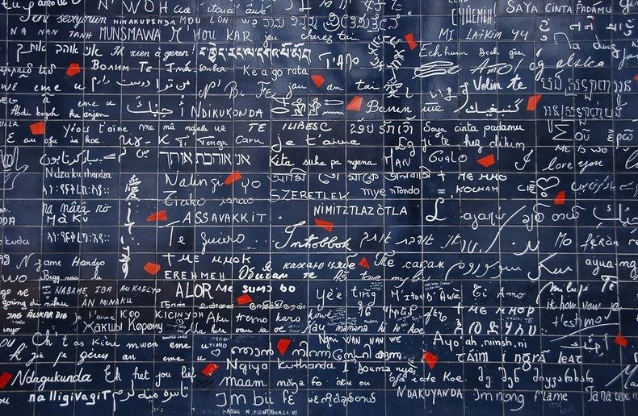
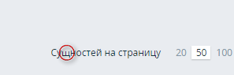

Интернационализа́ция (англ. internationalization) — технологические приёмы разработки, упрощающие адаптацию
продукта (такого как программное или аппаратное обеспечение) к языковым и культурным особенностям региона
(регионов), отличного от того, в котором разрабатывался продукт.
Что такое локализация?
Локализация — процесс адаптации программного обеспечения к культуре какой-либо страны.
Как частность — перевод пользовательского интерфейса, документации и сопутствующих файлов программного обеспечения с одного языка на другой.
Зачем нужна интернационализация?

251 страна
3000-6000 языков
Новые пользователи
Различие локалей:
Фразы (tree - дерево - дрэва)
Числа (3,7 - 3.7)
Даты (31.10.2015 - 10.31.2015)
Направление текста и размещение блоков
Справа налево
Слева направо
Сверху вниз
Другое...
Проблемы и решения
Фразы
Часто хитрим и делаем фиксированый размер
Шрифты. Не все шрифты хорошо отображаются на разных языках 
Объект Intl является пространством имён для API интернационализации ECMAScript, предосталяющим языко-зависимое
сравнение строк, форматирование чисел и дат со временем. Конструкторы объектов Collator, NumberFormat и
DateTimeFormat являются свойствами объекта Intl.
var collator = new Intl.Collator();
console.log(collator.compare('a', 'c')); // → отрицательное значение
console.log(collator.compare('c', 'a')); // → положительное значение
console.log(collator.Collator().compare('a', 'a')); // → 0
// В немецком буква ä идёт рядом с буквой a
console.log(new Intl.Collator('de').compare('ä', 'z'));
// → отрицательное значение
// В шведском буква ä следует после буквы z
console.log(new Intl.Collator('sv').compare('ä', 'z'));
// → положительное значение
var date = new Date(Date.UTC(2012, 11, 20, 3, 0, 0));
// Форматирование ниже предполагает, что местный часовой пояс равен
// America/Los_Angeles для локали США
// В американском английском используется порядок месяц-день-год
console.log(new Intl.DateTimeFormat('en-US').format(date));
// → "12/19/2012"
// В британском английском используется порядок день-месяц-год
console.log(new Intl.DateTimeFormat('en-GB').format(date));
// → "20/12/2012"
// В корейском используется порядок год-месяц-день
console.log(new Intl.DateTimeFormat('ko-KR').format(date));
// → "2012. 12. 20."
var number = 123456.789;
// В Германии в качестве разделителя целой и дробной части используется запятая, а в качестве
// разделителя разрядов - точка
console.log(new Intl.NumberFormat('de-DE').format(number));
// → 123.456,789
// В России в качестве разделителя целой и дробной части используется запятая,
//а в качестве разделителя
// разрядов - пробел
console.log(new Intl.NumberFormat('ru-RU').format(number));
// → 123 456,789
// В большинстве арабоговорящих стран используют настоящие арабские цифры
console.log(new Intl.NumberFormat('ar-EG').format(number));
// → ١٢٣٤٥٦٫٧٨٩
var tooltipTextMap = {
'board': intl.formatMessage('Make this View visible to all or selected teams'),
'group': intl.formatMessage('Make this Group visible to all or selected teams')
};

 Safari not supported
Safari not supported


 автоматизации процесса.
автоматизации процесса.
 Думайте над оригинальными фразами. Не усложняте. Материальный дизайн writing guide.
Думайте над оригинальными фразами. Не усложняте. Материальный дизайн writing guide.